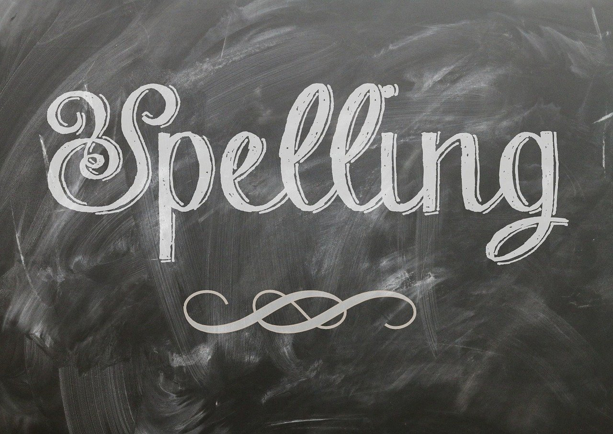
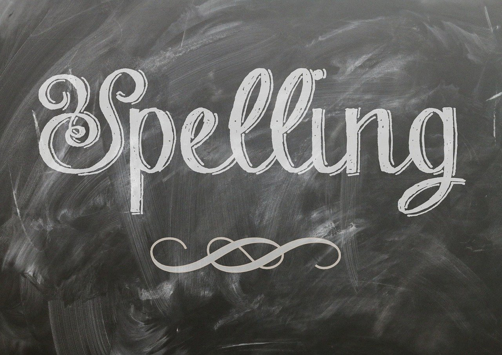

Terug naar blog

Terug naar blog

Goed leren spellen is nodig voor de taalontwikkeling van kinderen. Het is een vaardigheid die ze nodig hebben in hun dagelijks leven en op school. Maar spellingsoefeningen kunnen soms saai en repetitief zijn, waardoor het moeilijk kan zijn om kinderen gemotiveerd te houden. Ben je op zoek naar creatieve manieren om spelling te oefenen? In dit artikel ontdek je hoe je spelling kunt oefenen tijdens autoritten en hoe je het leuk en educatief kunt maken voor kinderen. Je kunt bijvoorbeeld een autohuren in Portugal en de ritten ondertussen leuk en leerzaam maken. Lees hier hoe!
Spelletjes onderweg
Autoritten in een huurwagen van Easyterra kunnen lang en saai zijn, maar je kunt deze tijd benutten door leuke spelletjes te spelen met je kinderen. Een van de populaire spellen is "Ik zie, ik zie wat jij niet ziet." In plaats van alleen kleuren te raden, kun je het spel aanpassen door woorden te gebruiken. Bijvoorbeeld: "Ik zie, ik zie wat jij niet ziet, en het begint met de letter 'S'." Dit spel daagt kinderen uit om te zoeken naar woorden die beginnen met de juiste letter. Zo kunnen ze hun spellingvaardigheden verbeteren.Woordenschat Quiz
Autoritten bieden ook een geweldige gelegenheid om de woordenschat van je kinderen uit te breiden. Je kunt een woordenschat quiz organiseren door nieuwe woorden te introduceren en je kinderen te vragen om de betekenis ervan te raden. Geef ze bijvoorbeeld een woord zoals "fascinerend" en vraag ze om te raden wat het betekent. Door regelmatig nieuwe woorden te introduceren, versterk je niet alleen hun woordenschat, maar oefenen ze ook met spelling doordat ze de woorden moeten uitspreken en spellen.Woorden raden
Een ander spel dat je kunt spelen in de auto is "Woorden raden." Dit spel is vergelijkbaar met het bekende spel "Galgje," maar met een auto twist. Een persoon kiest een woord en de anderen moeten letters raden om het woord te ontcijferen. Het spel kan worden aangepast aan het niveau van het kind, waarbij eenvoudigere woorden worden gebruikt voor jongere kinderen en complexere woorden voor oudere kinderen. Dit spel bevordert het spelenderwijs leren van spelling en is leuk voor het hele gezin.Nummerplaat woorden
Een andere interessante manier om spelling te oefenen in de auto is door woorden te zoeken op nummerplaten. Geef je kinderen de opdracht om woorden te vinden die beginnen met de letters op de nummerplaten van andere auto's. Ze kunnen bijvoorbeeld woorden zoeken zoals "auto," "banaan," "hond," enzovoort. Dit spel is niet alleen leuk, maar het moedigt kinderen ook aan om alert te zijn en hun ogen open te houden voor woorden om hen heen. Het is een interactieve manier om de spellingvaardigheden van je kinderen te versterken.Nummerplaat woorden
De auto is de perfecte setting om het spel "Woordketting" te spelen. Begin met het noemen van een woord, bijvoorbeeld "huis." Het volgende kind moet dan een woord noemen dat begint met de laatste letter van het vorige woord, zoals "slang." Het spel gaat zo verder en kinderen moeten snel denken en spellen om woorden te vormen die passen bij de ketting. Dit spel is niet alleen leuk, maar het daagt kinderen ook uit om na te denken over de juiste spelling en om snel te reageren.Terug naar blog